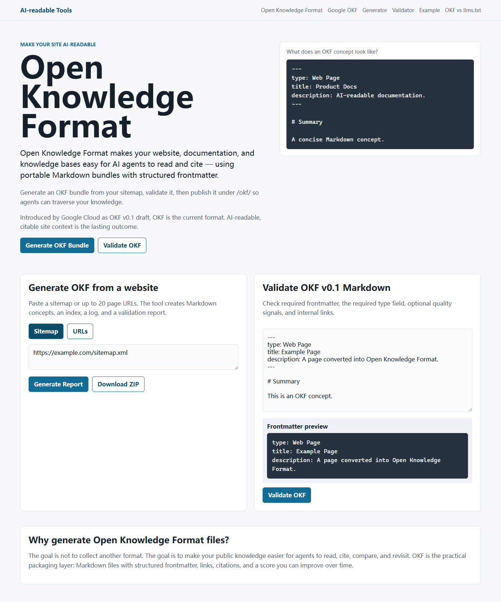
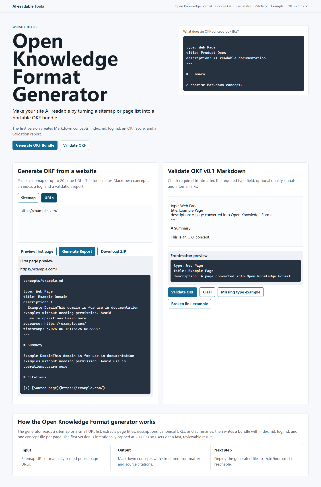
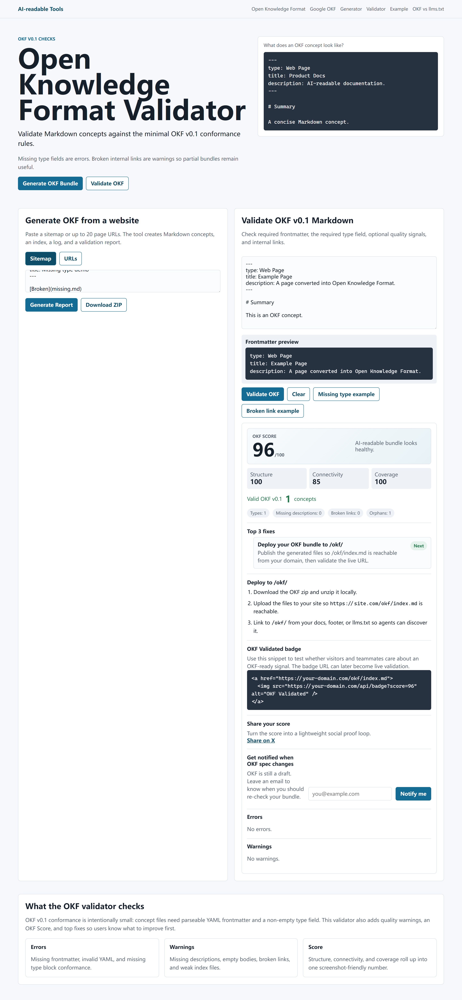
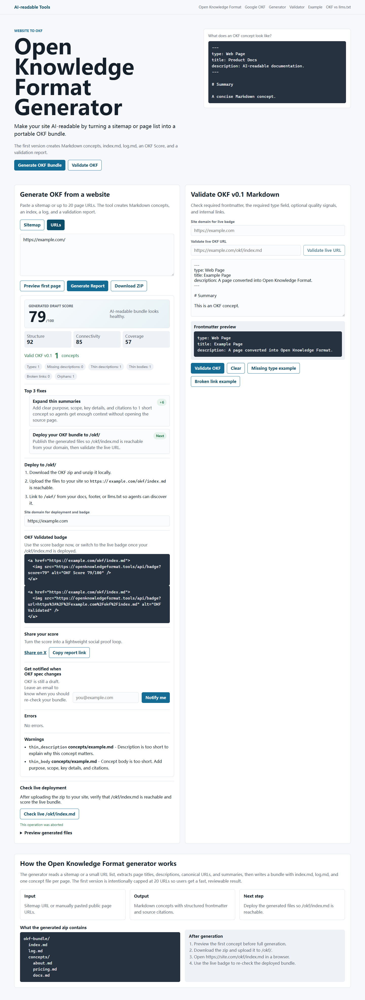

OKF 生成器
输入 sitemap.xml 或页面 URL 列表，生成 `index.md`、`log.md` 和 `concepts/*.md`，并提供 zip 下载。
Open Knowledge Format tools
OKF 工具站提供 Open Knowledge Format 生成器、验证器、OKF Score 和部署指南，帮助网站、文档站和知识库把公开内容整理成可遍历、可引用的 Markdown bundle。
这个 GitHub Pages 页面是静态介绍页。正式工具、在线生成和在线验证请访问主站。
功能说明
OKF 的价值不只是多放几个 Markdown 文件，而是让 AI agent 可以先读索引，再按概念文件逐步展开上下文。工具站把生成、校验、评分和部署说明放在同一条工作流里。
输入 sitemap.xml 或页面 URL 列表，生成 `index.md`、`log.md` 和 `concepts/*.md`，并提供 zip 下载。
校验 Markdown frontmatter、必填 `type` 字段、内部链接、描述缺失和内容过薄等问题。
把结构完整度、链接连通性和内容覆盖度合并成 0-100 分，方便截图、对比和持续优化。
告诉你如何把生成文件发布到 `/okf/`，并通过 `https://site.com/okf/index.md` 验证是否可访问。
使用场景
把产品页、定价页、帮助文档和更新记录整理成结构化知识包，让 AI agent 更容易找到准确入口。
用 OKF Score 检查 AI-readable 内容质量，发现缺失描述、薄内容、孤立概念和断开的 Markdown 链接。
把 docs、runbook、API 页面和知识库导出成可版本管理的 Markdown，减少 agent 直接猜页面结构的成本。
像当前 GitHub Pages 页一样，用静态页面解释项目用途，展示截图，并把访问者导向真正可交互的工具站。
真实截图
以下截图来自当前 OKF 工具站的验证资料，展示了首页、生成器、报告和部署检查，而不是占位图。




更新记录
新增静态介绍页，包含 OKF 功能说明、使用场景、真实截图、更新记录和正式工具站外链。
上线 OKF 生成器、验证器、OKF Score、badge、分享报告和 `/okf/` 部署工作流。
在正式站点公开 `/okf/index.md` 和 `/llms.txt`，用自身项目作为 OKF 示例。
FAQ
GitHub Pages 页面是静态外链介绍页，用于说明 OKF 工具站的价值和入口；正式生成、验证、报告和 API 能力仍在 `https://okftools.com`。
当前工具站使用 Next.js API Route 来抓取 sitemap、生成 zip、验证 OKF 和生成报告。GitHub Pages 只能托管静态文件，不适合直接运行这些动态能力。
`llms.txt` 更像给模型的站点阅读入口，OKF 更像可遍历的 Markdown 知识包。两者可以同时存在：用 `llms.txt` 指向 `/okf/index.md`。
如果你的网站还没有 OKF bundle，先打开生成器输入 sitemap；如果你已经有 Markdown bundle，先用验证器检查分数和修复建议。
下一步
从 sitemap 开始，生成可审阅的 Markdown 文件，部署到 `/okf/`，再用验证器检查 OKF Score。